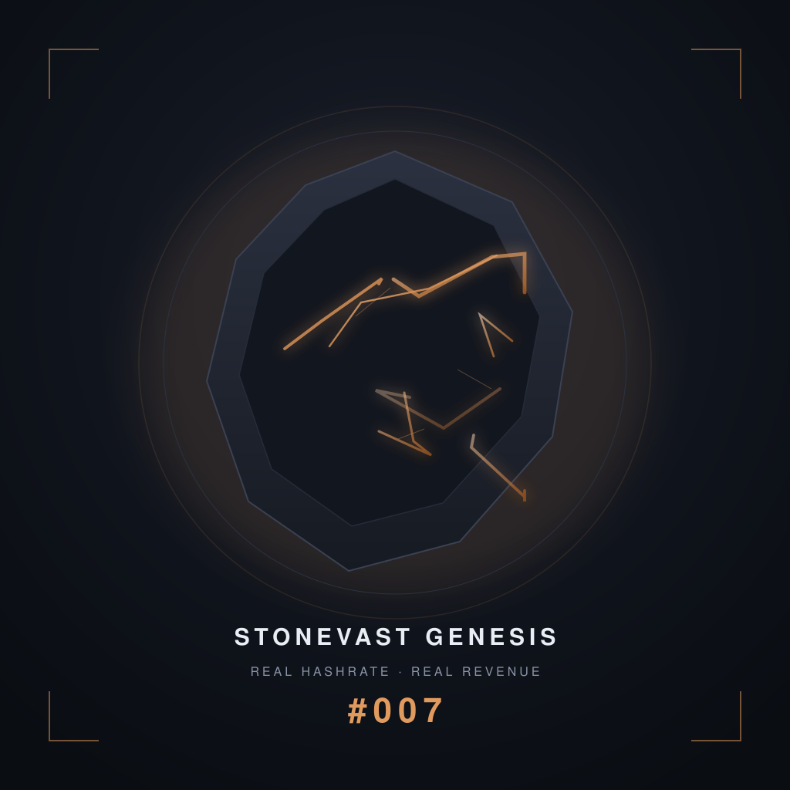

Genesis Collection · 创世 NFT
100 张 · 程序化生成 · 编号即种子，同号永远同图 · 历史链下登记归档
归档状态：新领取与邮件登记已暂停。本页仅保留既有登记快照、权益边界和可复现图墙；请勿发送领取邮件，也不要为领取、核验或恢复权益付款。

🪨 这是什么
每一张 Genesis NFT 都是链下登记的收藏图，不证明存在真实矿机，也不等于 Genesis Pass。矿石切片 + 芯片质感 + 橙色光脉，与官网品牌同源。
全部 100 张由
一段开源脚本程序化生成——
编号是随机种子，任何人跑同一脚本都能复现同一张图。
没有稀缺性魔术，只有可验证的诚实。
🪙 历史领取流程 · 已停止
原流程曾通过邮件登记编号与昵称，并在本页公示结果。该流程现已停止，不再接受新领取、编号预留或邮件登记。
当前状态：没有有效领取按钮或付款入口。既有登记仅按下方快照展示，不因本次归档改造新增、转移或恢复任何权益。
性质说明：历史记录采用链下登记方式，NFT 图与登记记录公开；是否链上铸造或锚定没有既定时间表。
Genesis Pass 与 Pro 是独立产品，本页不销售、激活或恢复任何产品权益。
本站总访问量 … 次 · 今日访客 … 人